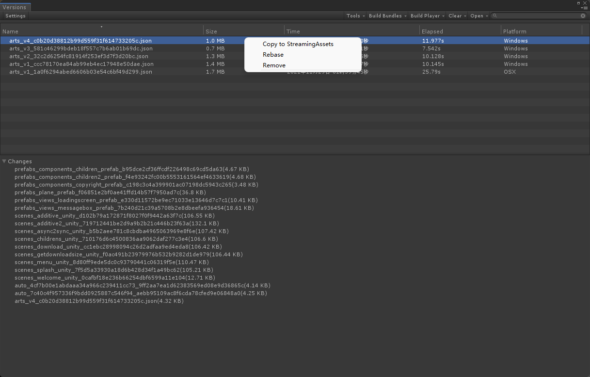

关于
xasset 致力于让 Unity 程序快速交付。
提示
示例使用 WebGL 运行，部分功能可能无法使用。
xasset 提供了提供了以下这些出色的特性让 Unity 程序更快更好的打包、发布和运行：
- 强大的分布式打包工具：可视化编辑，自动优化打包质量。
- 自动分包：灵活把控安装大小，快速发布到应用商店。
- 高性能加密：不仅更安全，而且部分设备测试可以提升约 10% 的 IO 性能。
- 按需加载：针对局部内容预加载，快速体验或测试。
- 异步更新：动态计算 CPU 负荷，自动调度更新时机，通过分而治之减少卡顿。
如果你喜欢 xasset, 可以通过公司订阅或在 GitHub 给一个星标支持下！通过你们的支持，我们不断为每个人改进 xasset。
为什么
丰富的工具链支持
工欲善其事，必先利其器，以下工具 xasset 已经为有需要的团队准备就绪：
- 分组编辑：局部实时预览打包粒度和依赖关系，及时发现问题并解决问题。
- 打包管理：全面的资源引用依赖关系检查导出工具，提前发现问题和解决问题。
- 清单管理：全面了解打包的资源的大小，依赖关系，支持按类型筛选并导出文件数据。
- 加载管理：全面掌握资源在什么场景加载和释放，总共加载/释放了多少次，以及加载花费了多长时间等。
- 版本管理：全面、直观的了解每个版本的更新大小、日期、耗时、变化等，可以一键回滚线上资源版本到本地。 
此外，xasset 还为常用命令提供了可以快速执行的入口，具体参考编辑器顶部的 xasset 菜单。
快速打包和迭代
打包慢？问题多？为什么？查看 xasset 的打包指南就知道为什么要这么做：
- 分布式架构：按需处理减少算力浪费，提高打包速度和稳定性。
- 万能打包模式：有资源都能打包，快速调整打包粒度。
- 按需自动分组：自动分析依赖引用关系，自动优化打包冗余。
- 包名哈希替换：中文、空格、特殊字符再也不是问题。
- 包名键值替换：0 编码简化固定格式的长包名，输出更精炼。
同时，看看 xasset 这些强大的代码运行模式，就知道如何让开发效率爆表。
灵活把控安装大小
包体大？用户下载安装等待时间长？运营推广买量成本高？看看 xasset 可以如何帮你优化安装大小：
- 多种分包模式和配置，可以灵活多样的筛选分包数据。
- 自动处理依赖关系并根据分包配置剥离安装资源。
- 完美适配了 Google 的 Android App Bundle 和 Play Asset Delivery。
进一步了解和使用分包，可以参考分包指南。
按需加载快速体验
xasset 在各个平台都使用统一的路径加载资源，不仅加载逻辑可以一次编码，多处运行，同时，也还可以：
- 局部更新：可以针对局部内容进行预加载和更新，减少用户等待时间。
- 自动更新：加载资源的时候，本地不存在的资源会自动去服务器加载，没有额外的业务负担。
- 多线程下载：支持限速，断点续传，自修复异常等，轻松把控 IO 能耗，减少业务中断。
- 热重载：已经加载的资源，更新后再次加载可以及时生效，无需使用者释放旧资源。
- 异步转同步：同一个资源，异步加载还未完成的时候，调用可以正常使用同步加载和释放。
- 自定义加载路径：可以为默认的加载路径指定一个别名，出现同名冲突的时候 xasset 会通过日志输出异常。
担心重复 IO 和循环依赖？ xasset 使用引用计数进行内存管理，并通过良好的分层设计，天生没有无尽的循环依赖问题。
流畅运行安全可靠
程序运行卡顿，易破解？看看 xasset 在流畅度和安全性方案有哪些保障：
- 提供易扩展和使用的异步更新组件，可以通过分而治之避免卡顿。
- 提供高效的安装包资源加密机制，不仅可以防止资源被轻易破解，Android 部分设备还能提升 ~10% 的 IO 性能。
- 提供异步实例化，异步渐进式回收，异步清理文件的常用操作，所有异步操作都会动态计算 CPU 负荷，自动调整更新时机，来为程序的流程运行提供有力的支撑。
究竟有多可靠？ xasset 专门针对循环依赖资源加载，场景加载，异步转同步资源加载等极端案例编写了示例代码，可以在 Profiler 测试中，具备进多少，出多少的稳定性。
与 Addressables 的对比
与 Addressables 对比，可以确信的是，使用 xasset 将具备这些优势：
- 分布式打包支持，可以按需打包减少算力浪费。
- 实时预览打包粒度和依赖关系，快速发现问题乃至解决问题。
- 万能打包模式，所有格式的资源都能打包更新，第三方资源的版本更新更方便。
- 按需自动分组自动优化冗余，打包又快又好。
- 安装包资源加密，不仅安全而且部分设备可以提升 ~10% 的 IO 性能。
- 自动分包和谷歌分包机制，节省大量的业务对接时间。
- 支持限速、断点续传的多线程下载，轻松把控 IO 吞吐量，降低 CPU 负荷，避免发热。
最早，Unity 提供的热更资源加载方案是使用 AssetBundleName + AssetName 这种形式来加载资源，但是在生产环境中投入使用后，资源打包的粒度可能会经常修改，而资源在工程的相对路径却相对恒定的，并且相对路径不管对技术还是策划或者其他人都非常直观，把易变的和不变的分开，不同岗位之间的工作更好的解耦，而 xasset 的诞生，也正萌芽于此。
后来，Unity 官方的 Addressables 在 xasset 发布至少 1 年后，也采用使用一个地址访问资源的概念。并且，xasset 的开源项目得到了显示为 Unity Technology 的 Github 用户的星标支持，可见 xasset 创作理念相对官方的先进性。同时，Addressables 有 3 万行以上的代码，这个代码数量是 xasset 的 3 倍以上，做加法易，做减法难，自然代码越少越好掌握。
获取方式
xasset 专注于为团队提供技术支持，个人或 3 人以下的小团队可以使用免费的开源版。开源版目前也有特殊许可，请遵守开源版的许可说明使用。对于公司，需要获得我们的授权许可才能使用，我们的授权有专门的用户协议，只有接受用户协议的条款才能订阅，通过你们的支持，我们不对为大家改进 xasset。
前往价格，可以了解公司订阅的价格和服务内容。